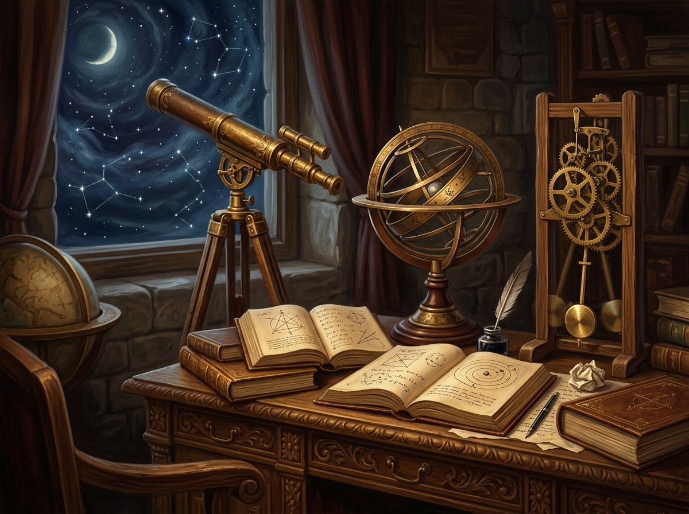
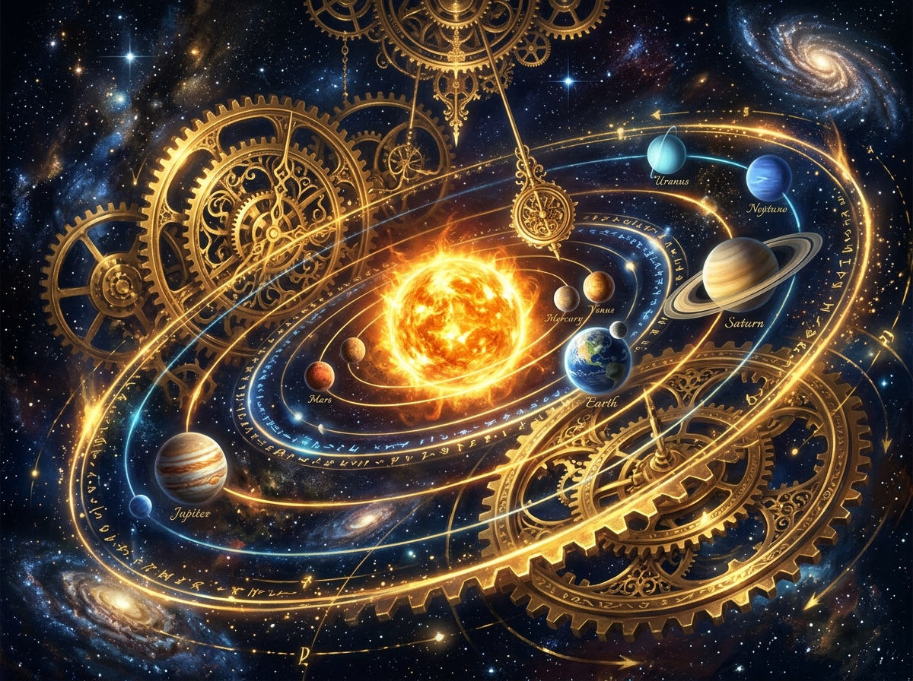
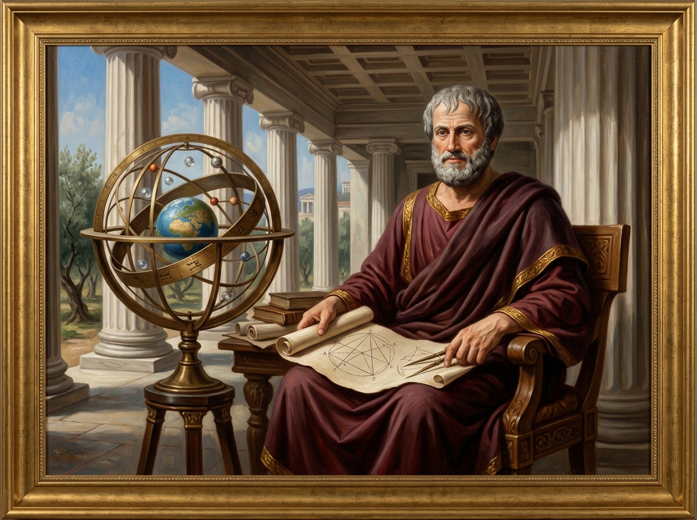
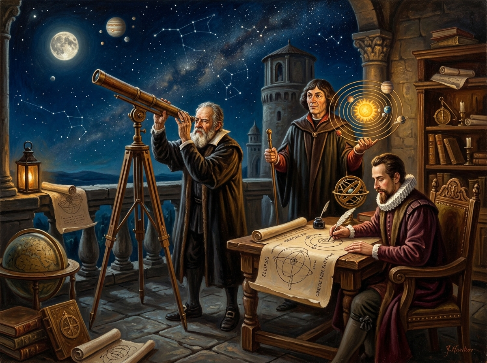
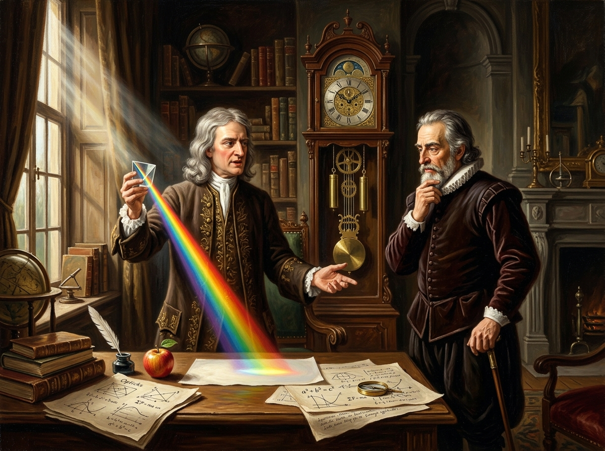
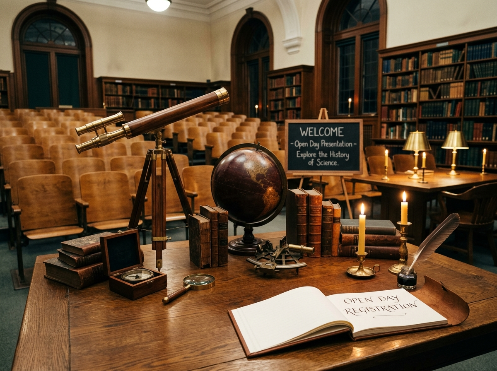

Van de Griekse abstractie naar het mathematische 'Uurwerk' van Newton (Blok 1: 3 lessen).
Hoe ons menselijk wereldbeeld in twee eeuwen tijd radicaal kantelde.
Aristoteles, Copernicus, Kepler, Galilei, Descartes en Newton.
Geschiedenis vol verhalen; geen zware wiskunde vereist!

Ontdek hoe observatie en wiskunde de plaats innamen van eeuwenoude dogma's.
Waarom het 2000 jaar duurde voordat autoriteit plaatsmaakte voor feiten.
De Aarde verliest haar unieke centrumpositie in het heelal.
Universele wetten verenigen de vallende appel en de planetenbanen.

Pure logica, meetkunde en het onwrikbare geocentrische universum.
Sublieme wiskunde en deductie, maar geen systematische experimenten.
Doelgerichtheid (teleologie) en de aarde als stilstaand middelpunt.
Klassieke teksten werden heilig verklaard; twijfelen werd ketterij.

Copernicus, Kepler en Galilei zetten de aarde in beweging.
De Zon in het midden: het begin van een intellectuele revolutie.
Weg met de 'volmaakte cirkel'; 3 wetten die planeetbanen verklaren.
Manen rond Jupiter, kraters op de maan en het conflict met de kerk.

Descartes, Newton en de triomf van het deterministische universum.
De natuur als rationele machine van bewegende materiedeeltjes.
Principia (1687): Drie bewegingswetten & universele gravitatie.
Het heelal als een perfect voorspelbaar, mathematisch mechaniek.

Alles over deze inspirerende cyclus in het najaar:
Voor iedereen geïnteresseerd in wetenschap en filosofie. Geen voorkennis vereist.
3 bijeenkomsten vol historische context, visuele verhalen en discussie.
Wil je meer weten over de data of direct inschrijven? Ik vertel je graag meer!
